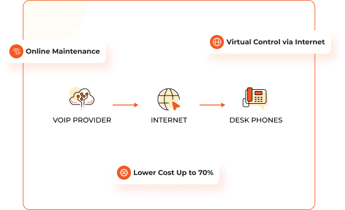
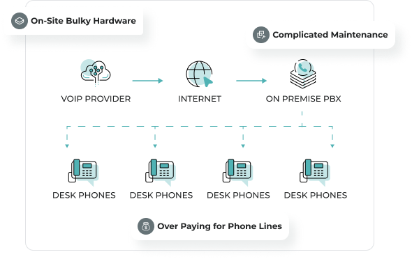
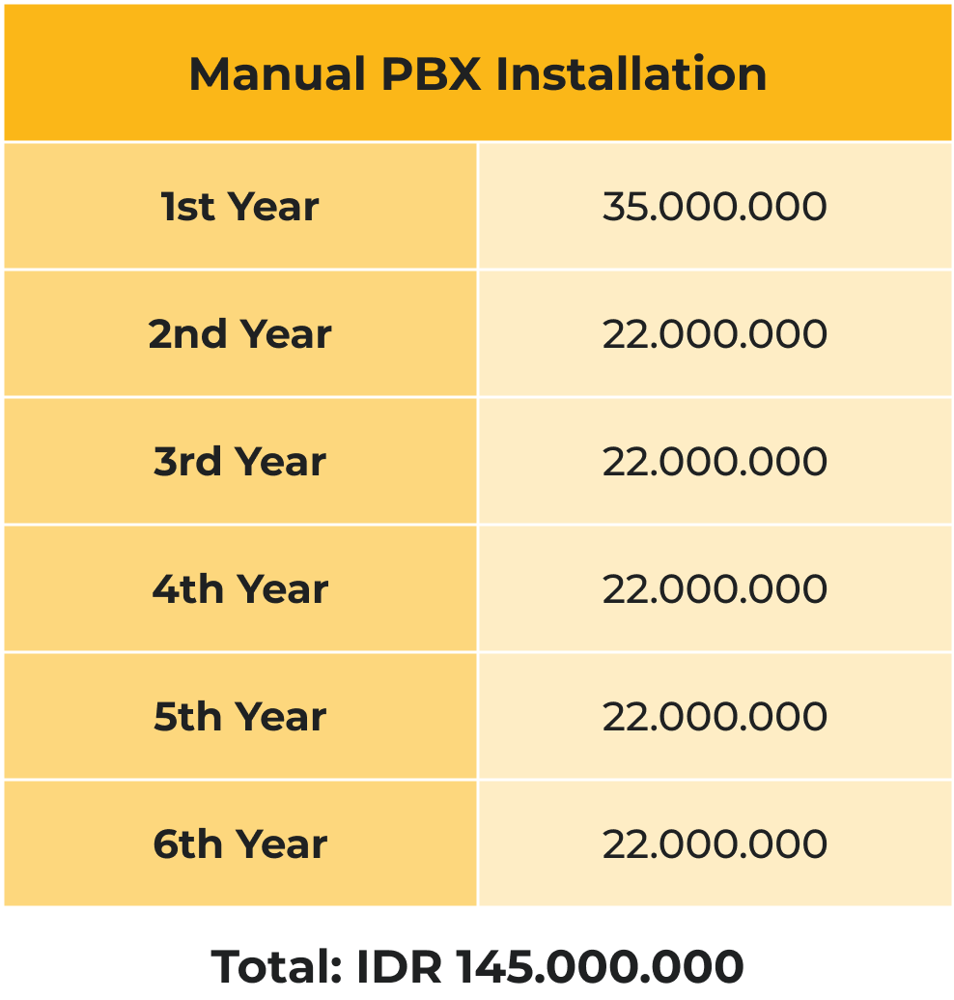
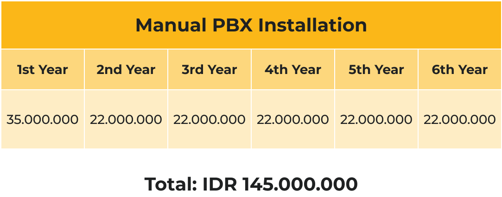
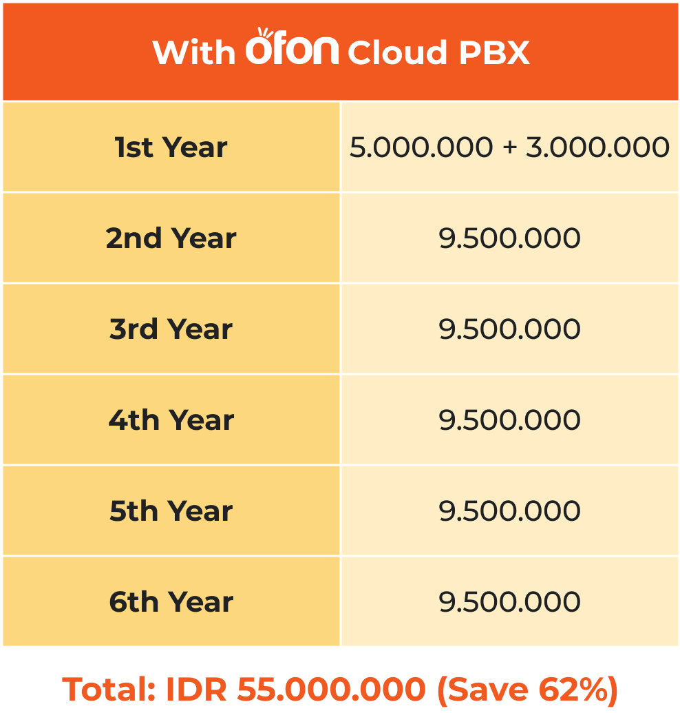
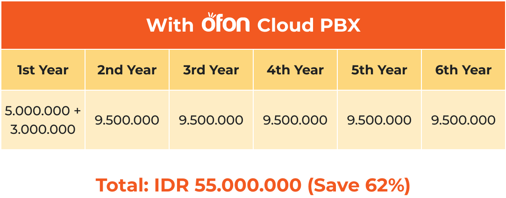

Need to maximize productivity and minimize cost business telecommunications?
Certified Engineer by
Helping Many Companies for Better Communication
In the last decade, over 40% of mid-level companies have faced major communication challenges due to outdated technology. On-premise PBX is no longer sufficient and we’re here with the solution to upgrade your telecommunication system.
On-premise PBX
Ofon Cloud PBX
Saving Efficiently
Reduce maintenance costs and make you save significantly while maintaining high standards of service.
Hardware Elimination
Say goodbye to hardware hassles and enjoy a seamless, worry-free experience with our advanced solutions.
Cost Reduction
Significant cost savings by offering reductions of up to 50% to 70% compared to the fees charged by other providers.
Ofon PBX
Unify all branches and user extensions into a single, enterprise-class telephony system with Ofon's Software as a Service (SaaS) solution.
Ofon SIP Trunk
Streamline your existing telephone connections and reduce costs with our efficient SIP Trunking service.
Managed Service
Optimize your budget by outsourcing the operation, maintenance, and management of your telephony infrastructure to our expert team.
Supported Technology
Compare the budget to understand how you can efficiently improve the way your company communicates. Assumed installation for 10 branch offices with 10 DID 10 CC offices each.
On-premise PBX
 VS
Ofon Cloud PBX
 Our services give all across the places to connect and grow businesses strongly.
20
Big Cities
3299
Customers
28+
Years Experience
TESTIMONIALS
Hear It Directly from Our Happy Clients
Really great to work with Ofon! Such a great opportunity to find automatic telecommunication, make it easy, simple and effective.
Alexandre Wong
PGN
Before Ofon we find it’s hard to managet our internal communication yet also the expensive services. But after we find Ofon, everything become All-In-One solution.
Alexandre Wong
MATAHARI
Good job for Ofon and team. To make our communication through everything became timeless and efficient.
Alexandre Wong
Tiket.com
Avoid Misunder-standings and Switch with Ofon!
Need to change the way your business communicate?
Contact UsFrequently Asked Questions
PT Batam Bintan Telekomunikasi
Menara Batavia Lt. 12A, Jl. K.H. Mas Mansyur No.Kav. 126, Karet Tengsin, Tanah Abang, Kota Jakarta Pusat, Daerah Khusus Ibukota Jakarta 10250
marketing@ofon.co.id
(021) 3971 0000